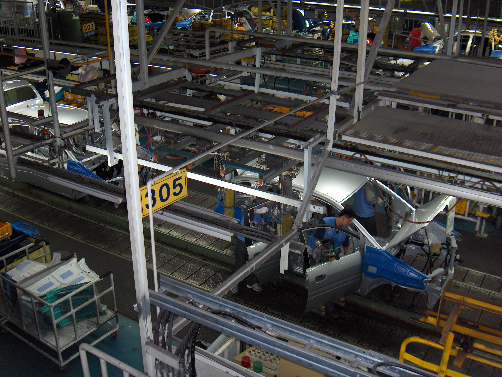
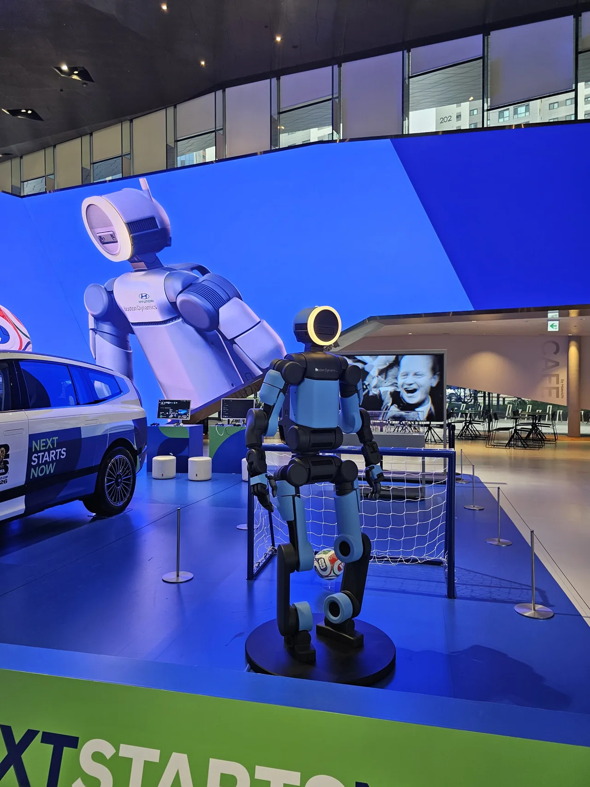
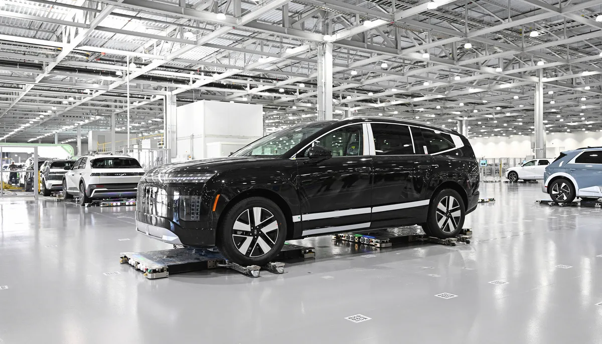
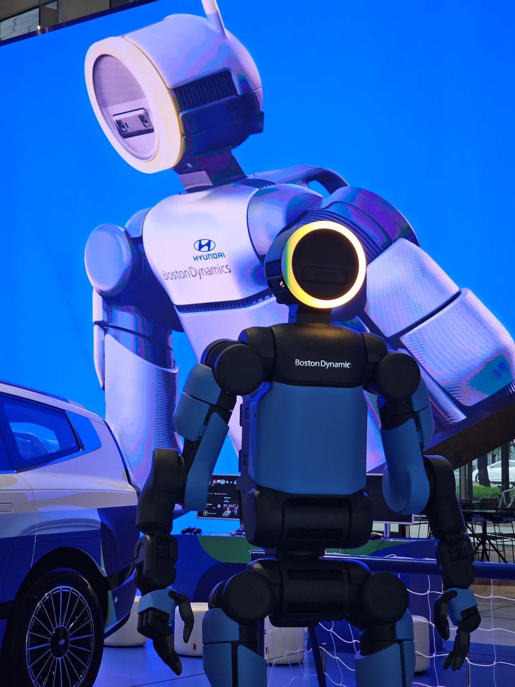

▲ 111일 만의 잠정합의로 라인이 다시 돌아간다 ⓒ Wikimedia Commons
나흘 전이었습니다.
현대차 노조가 10년 만에 전면 파업에 들어갔습니다.
그리고 111일간의 교섭이 잠정합의로 끝났습니다. 무엇을 주고받았는지 숫자로 정리했습니다.
1. 합의안에 담긴 것
| 항목 | 내용 |
|---|---|
| 기본급 | 10만 원 인상 (호봉승급분 포함) |
| 경영성과금 | 400% + 1,270만 원 |
| 주식 | 15주 |
| 복지포인트 | 50만 원 |
📍 '400% + 1,270만 원'을 읽는 법
성과금은 기본급 대비 비율과 정액을 섞어 지급하는 것이 관행입니다. 400%는 기본급의 네 배를 뜻하고, 여기에 1,270만 원이 정액으로 얹힙니다. 정액분은 기본급이 낮은 저연차 직원에게 상대적으로 큰 비중이 됩니다.
주식 15주가 포함된 점도 눈여겨볼 대목입니다. 현금이 아니라 회사 지분으로 지급하는 방식은, 회사 실적과 직원 보상을 연동하려는 구조입니다.
2. 진짜 쟁점이었던 것 — 고용
이번 교섭에서 임금보다 무거웠던 항목이 있습니다. 자동화에 따른 고용 안정입니다.
이 문제는 나흘 전 10년 만의 전면 파업에서 핵심 요구로 제기됐습니다. 현대차가 2028년부터 보스턴다이내믹스 아틀라스를 생산 현장에 단계적으로 도입할 계획이었기 때문입니다.
| 항목 | 내용 |
|---|---|
| 2027년 하반기 | 기술직 200명 신규 채용 |
| 2028년 | 기술직 300명 신규 채용 |
| AI · 로보틱스 | 신기술 도입에 노사 공동 대응 |
📍 '공동 대응'이라는 표현
도입 자체를 막는 조항이 아닙니다. 노사가 함께 논의하겠다는 절차적 합의에 가깝습니다. 다만 이 문구가 들어갔다는 것 자체가 의미가 있습니다. 앞으로 자동화 관련 결정에서 노조가 협의 테이블에 앉을 근거가 생겼기 때문입니다.
채용 시점도 눈여겨볼 만합니다. 2027년 하반기와 2028년입니다. 아틀라스 도입이 시작되는 해와 겹칩니다. 로봇이 들어오는 해에 사람도 뽑는다는 구도로 정리한 셈입니다.

▲ 2028년 도입 예정인 아틀라스. 채용 계획도 같은 해를 겨냥한다 ⓒ Damian B Oh / Wikimedia Commons (CC BY-SA 4.0)
3. 파업이 남긴 숫자
합의에 이르기까지의 대가가 있었습니다.
| 항목 | 규모 |
|---|---|
| 누적 파업 시간 | 60시간 |
| 생산 차질 | 약 5만 5,200대 |
| 매출 손실 | 2조 3,000억 원 이상 |
| 8월 21일 전면 파업 | 조합원 약 3만 9,000명 참여 |
회사 관계자는 "파업으로 주주와 고객, 부품 협력사 등 수많은 이해관계자분들께 심려를 끼쳐드렸다"며, "노사가 피해 확대를 막아야 한다는 절박함으로 합의를 이뤄냈다"고 밝혔습니다.
📍 협력사 문제가 컸습니다
완성차 공장이 멈추면 부품 협력사가 먼저 무너집니다. 현대차는 손실을 감당할 체력이 있지만, 협력사는 몇 주만 물량이 끊겨도 자금난에 빠집니다. 7월 이후 이어진 파업에서 협력사 경영난이 실제로 발생했고, 이것이 양측을 테이블로 밀어붙인 요인 중 하나로 지목됩니다.
4. 차를 기다리는 사람에게 달라지는 것
가장 실질적인 변화는 출고입니다.
✅ 지금 계약 대기 중이라면
· 노사는 하반기 생산과 신차 출시에 집중하기로 합의했습니다
· 밀린 물량은 특근으로 일부 회복되는 것이 통상적입니다
· 다만 즉시 정상화되지는 않습니다 — 5만 대가 넘는 차질분이 쌓여 있습니다
· 인기 차종일수록 대기가 더 길게 남습니다
하반기 신차 일정도 영향을 받습니다. 팰리세이드 라인업 확대, 신형 투싼 등 굵직한 출시가 3~4분기에 몰려 있습니다. 생산 정상화가 곧 출시 일정의 전제입니다.

▲ 자동화는 이번 합의로 멈추지 않는다. 논의 방식이 정해졌을 뿐이다 ⓒ 현대차그룹
5. 아직 끝난 것은 아닙니다
📍 '잠정'합의입니다
노사 대표가 만든 안일 뿐, 조합원 찬반투표에서 가결돼야 최종 확정됩니다. 과거 현대차에서도 잠정합의안이 부결돼 교섭이 다시 시작된 사례가 있습니다. 투표 결과가 나오기 전까지는 확정된 조건이 아닙니다.
그럼에도 전면 파업이 반복될 가능성은 크게 낮아졌습니다. 양측 모두 손실 규모를 확인한 뒤 나온 합의이기 때문입니다.

▲ 2028년까지 남은 시간은 약 2년이다 ⓒ Damian B Oh / Wikimedia Commons (CC BY-SA 4.0)
6. 정리
현대차 노사가 111일 만에 2026년 임금협상 잠정합의안을 도출했습니다. 기본급 10만 원 인상, 경영성과금 400% + 1,270만 원, 주식 15주, 복지포인트 50만 원입니다.
진짜 쟁점이던 고용은 채용과 협의 절차로 정리됐습니다. 2027년 하반기 기술직 200명, 2028년 300명을 뽑고, AI·로보틱스 도입에 노사가 공동 대응하기로 했습니다. 도입을 막는 것이 아니라 논의 테이블을 만든 합의입니다.
다만 조합원 찬반투표가 남아 있습니다. 가결돼야 최종 확정됩니다. 누적 파업 60시간, 생산 차질 5만 5,200대라는 대가를 치른 뒤 나온 결론입니다.